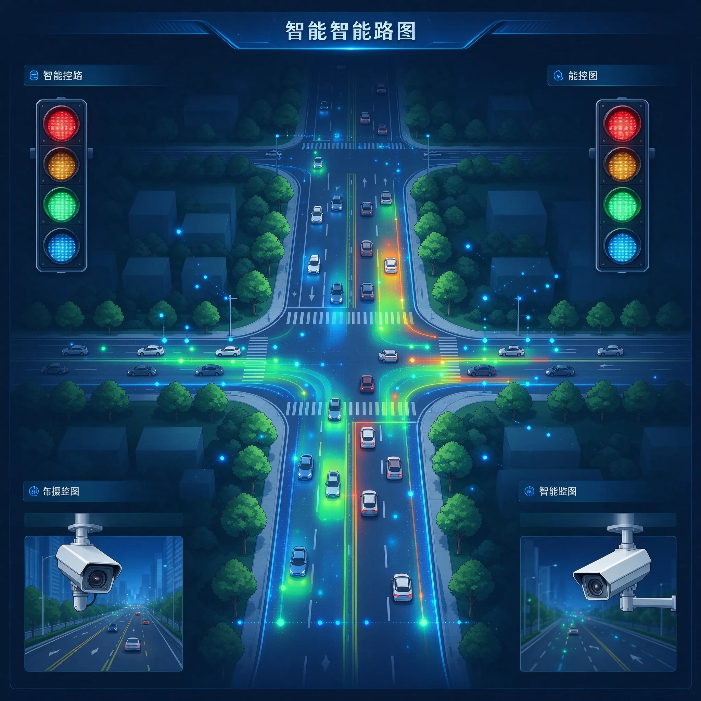
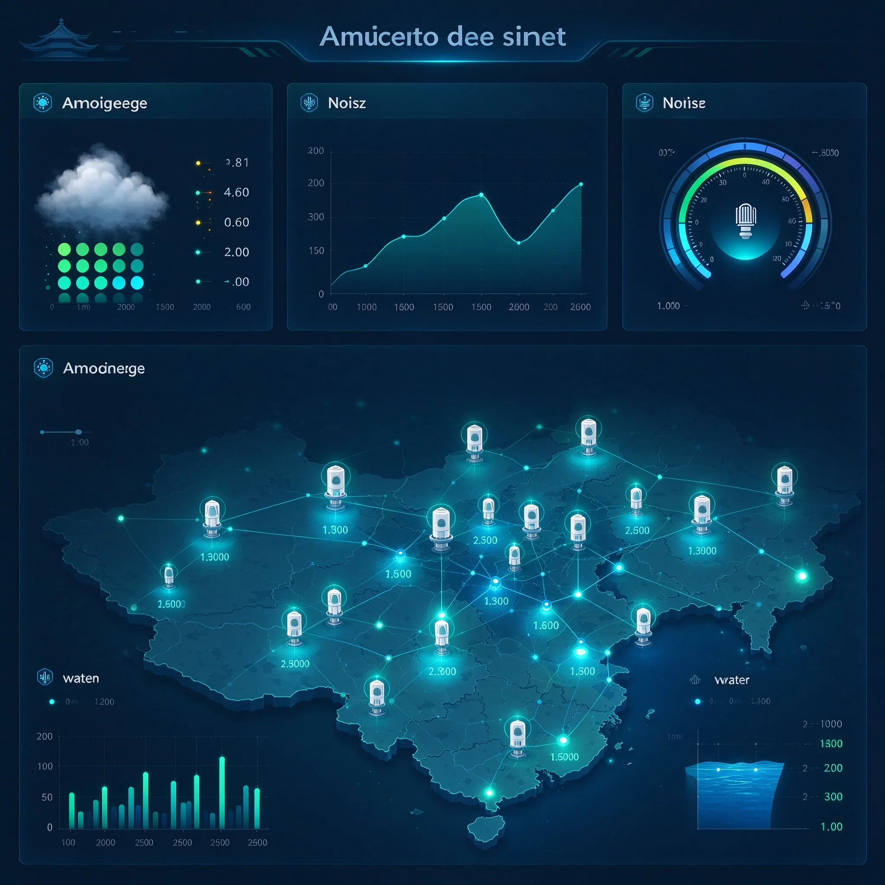
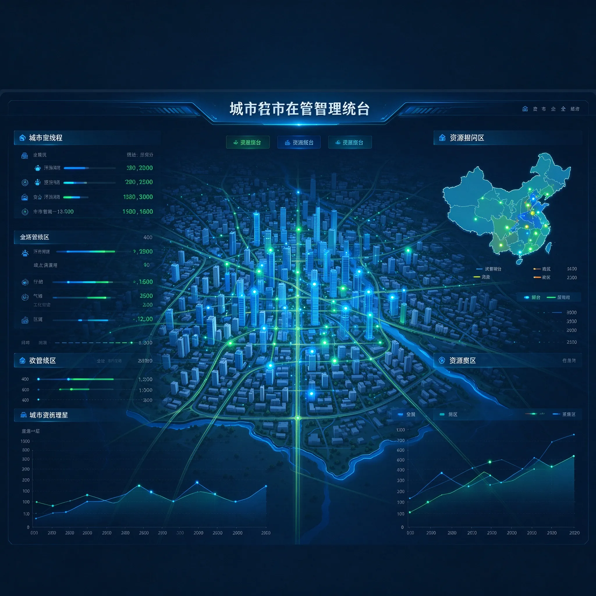
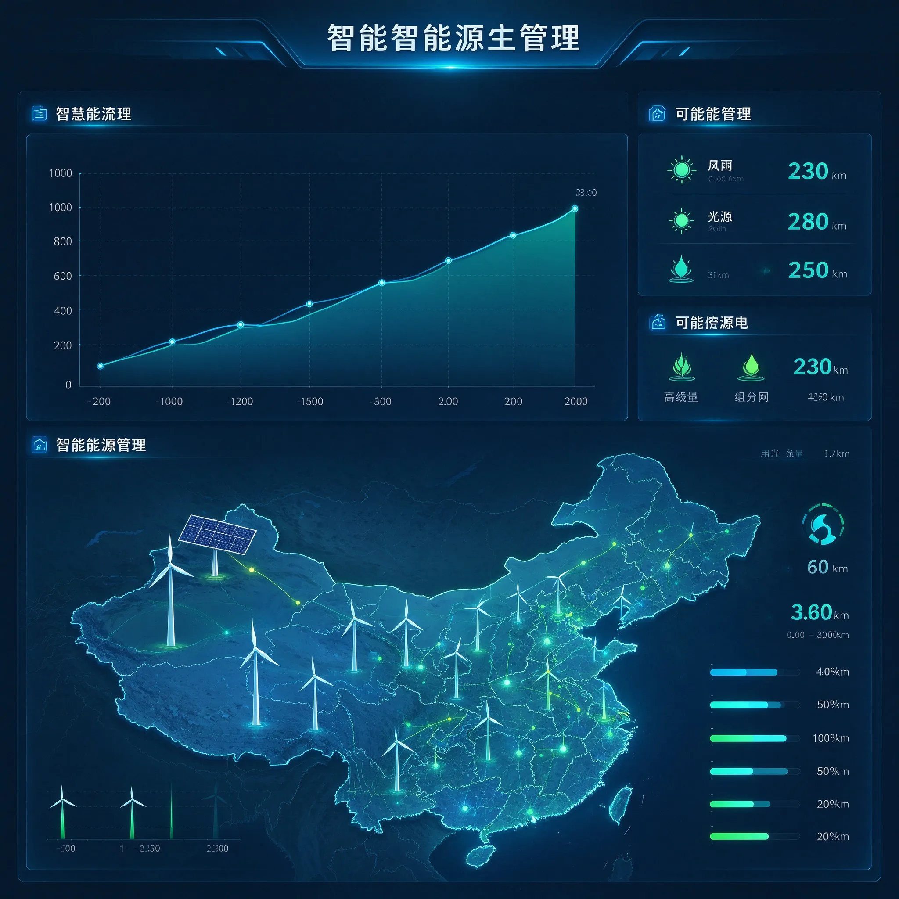
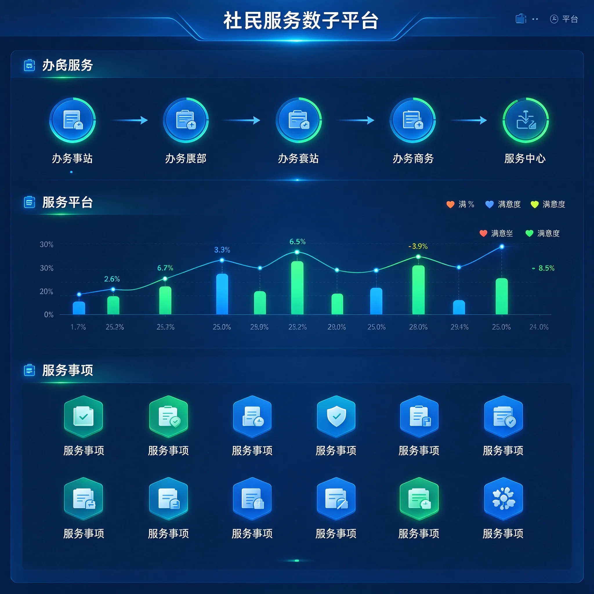
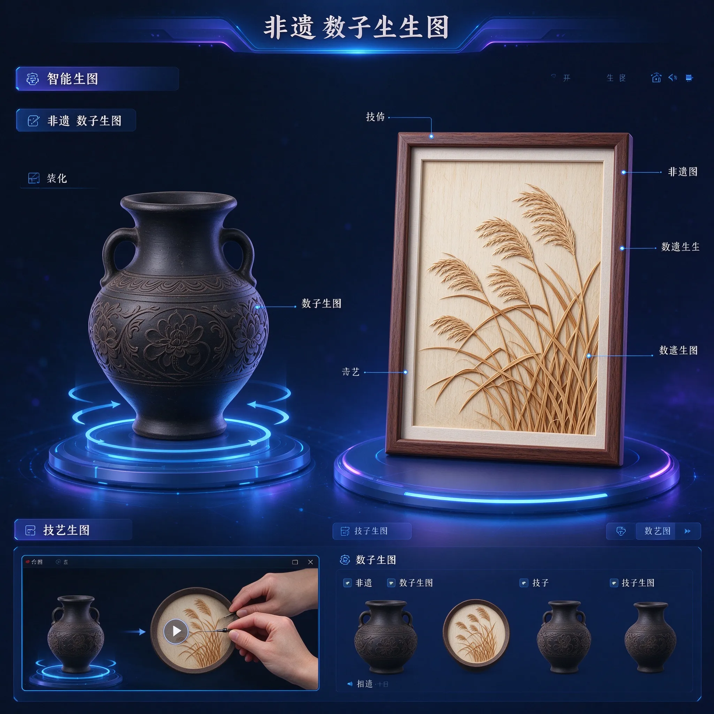
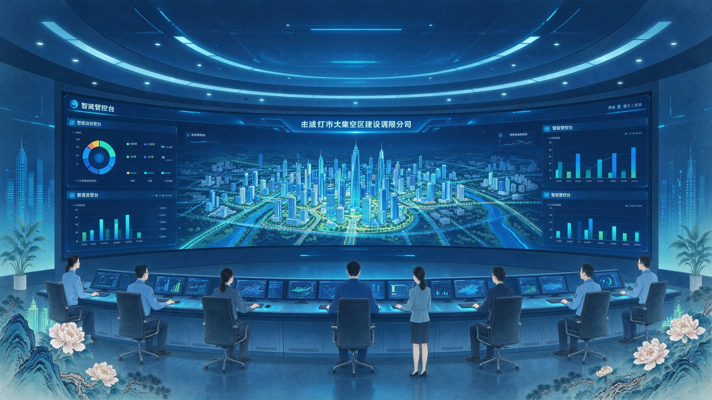

构建雄安新区数字孪生体，实时感知城市脉动

基于数字孪生平台实时监测全域交通流量，通过 AI 算法优化信号灯配时，实现拥堵预测与智能疏导。

部署全域环境传感器网络，实时采集空气质量、噪音水平、水质指标等数据，构建生态环境数字镜像。

在数字孪生空间中进行应急预案模拟演练，模拟洪涝、火灾等突发场景，优化应急响应流程。

实时监测区域能耗与可再生能源发电数据，通过数字孪生模型优化能源调配策略，助力碳中和目标。

整合政务、医疗、教育等公共服务数据，通过数字孪生平台实现服务资源可视化调配。

将非遗器物与技艺纳入数字孪生体系，通过三维建模与虚拟现实技术，实现非遗文化的数字化永久保存。
雄安新区正式设立，在规划之初即引入数字孪生理念，提出"物理城市与数字城市同步规划、同步建设"的创新方针。
《雄安新区数字孪生城市建设总体规划》正式发布，明确了"一中心四平台"的技术架构。
启动区核心区域的高精度三维数字模型初步建成，实现建筑级 LOD3 精度覆盖，首批物联网传感器接入平台。
覆盖雄安新区全域的数字孪生平台正式上线运行，整合超过 10 万个物联网传感器数据。
引入大语言模型与多模态 AI 技术，实现数字孪生平台的智能化升级，支持自然语言交互查询与智能预警。
雄安新区数字孪生大屏作为智慧城市的"数字大脑"，整合城市规划、交通管理、环境监测、公共服务等多维度数据，实现城市运行状态的全面感知与智能决策。
通过物联网传感器网络、5G 通信基站和 AI 算法引擎，城市管理者可以实时掌握城市运行脉搏，精准调配公共资源。
